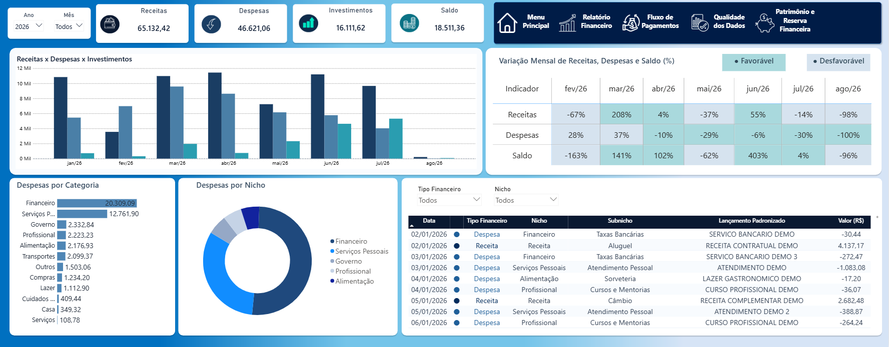
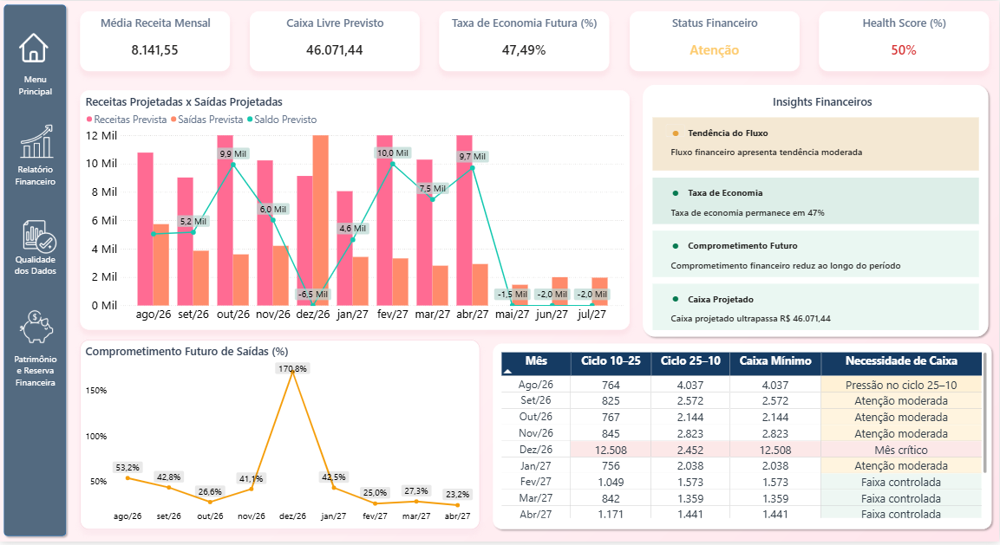
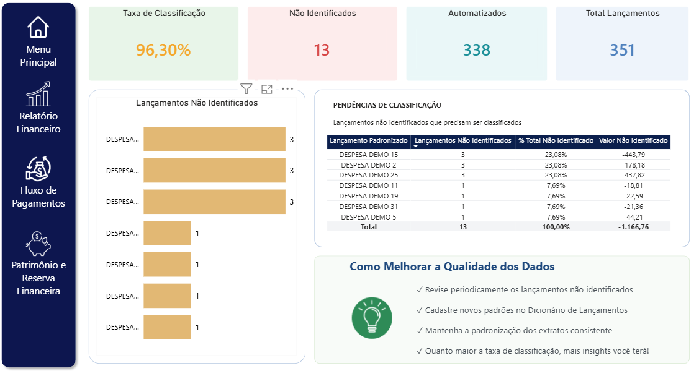
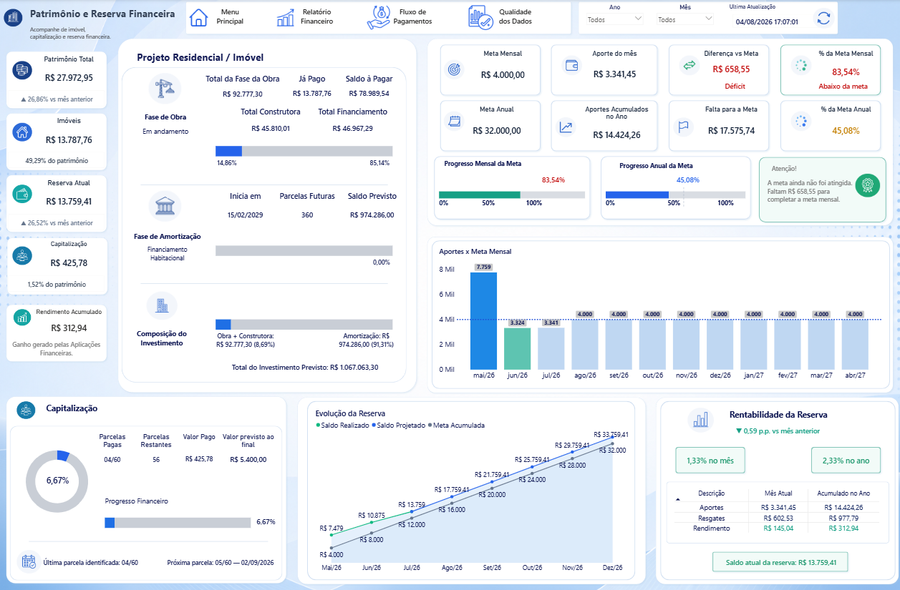

Controle Financeiro Pessoal — Power BI
Projeto desenvolvido para centralizar informações financeiras, estruturar regras de classificação e transformar movimentações em análises capazes de apoiar o acompanhamento financeiro presente e futuro.
Visão Geral do Projeto
O problema
Informações financeiras provenientes de diferentes movimentações exigiam tratamento, categorização e acompanhamento recorrente. O desafio era consolidar essas informações em uma estrutura confiável e fácil de analisar.
A solução
Foi desenvolvido um modelo de Business Intelligence no Power BI capaz de integrar dados tratados, regras de negócio, medidas DAX e diferentes perspectivas de análise financeira em uma única solução.
Arquitetura da Solução
O projeto foi estruturado para transformar dados financeiros brutos em indicadores e análises gerenciais.
Principais Recursos
Acompanhamento de receitas, despesas, investimentos, movimentações e saldo financeiro.
Projeção de receitas, saídas futuras, comprometimento financeiro e necessidade de caixa.
Monitoramento da taxa de classificação, lançamentos automatizados e pendências de tratamento.
Análise da evolução patrimonial, reserva financeira e acompanhamento de metas.
Regras de leitura para tendência do fluxo, economia, comprometimento futuro e caixa projetado.
Análise de cenários futuros para antecipar pressões financeiras e melhorar o planejamento.
Páginas do Relatório
Conheça as principais páginas desenvolvidas no relatório financeiro. Clique em uma imagem para visualizá-la em tamanho maior.




Evolução do projeto
O aumento da complexidade das regras de classificação, atualização e processamento dos dados levou à evolução desta solução para um aplicativo desenvolvido em Python. Essa evolução deu origem ao segundo case apresentado neste portfólio.